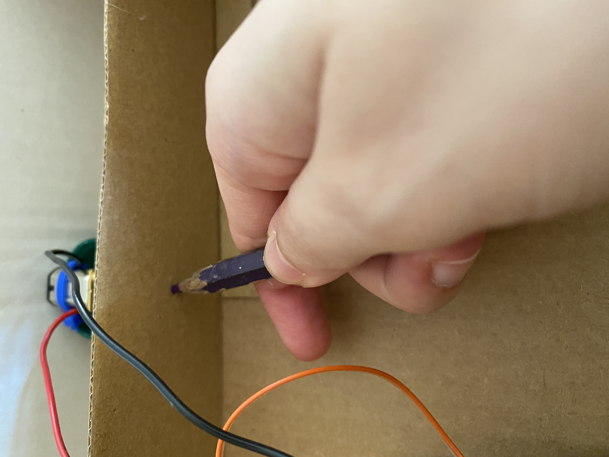

Topic 4: kinetick Sculpture
THE IDEA:
I am really interested in art and in my free time I like drawing in black and white. When I was looking for ideas to create a kinetick sculpture I decided to look into my sketchbook and bring one of my creatinos to life...
This drawing seemd the more realizable to me, so I decided to start from this sketch to create something kinetck. I decided to create a lamp with cristals moving up and down that refract the light emeted by the LEDs in order to create very beautiful optic effects.
MATERIALS:
To realize this project I needed lots of materials but I managed to faund all of them easily and at a good price. Here is a complete list of all the materials I have used:
-
2 cardboard boxes
4 glass plates
a Metro M4 board
-
a motor
some electric wires
-
5 LEDs (jellow, blue, white, green and red)
2 drinking straws
a Metro M4 board
-
4 wood sticks
hot glue
-
seewing thread
vinavil glue
a breadboard
-
some cloth
-
3 bottle caps
-
some tape
plastic jewels that refract light
FABRICATING:
I have bought four photo holders and used their glass plates to build the structure of my lamp:

I started by gluing the four glass plates together with hot glue.
.JPG)
Than I cerated the upper part of the structure with a cardboard box in which I glued a system of stiks. I used this sistem to make a single motor warp many threads. Firstly glued inside the box a support (made of bottle caps) to stick the motor against gravity (I made two holes into one cap for the wires of the motor), than I made a suppotr for the drinking straw and put a straw on the opposit side so that the dirinking srew would remain bounded in the correct position. I used tape to bound the straw to the motor.
At first I tryed to use tape to stick the support of the motor, However it was not really stable so I glued also the suppot. I have warped treads around the drinking strew in two different direction (to make it visible in the photos I used two different colors) so that some of them will warp while some other will unwarp while the motor is running in one direction.
When the upper part was ready I created a circuit to light up the LEDs of different colors and I have written a program to make three of them light when the motor was runnin in one direction, the other two when the motor was running in the opposite direction and all of them when the motor was off
const int A1A = 2; // define pin 3 for A-1A
const int A1B = 3; // define pin 4 for A-1B
const int LED_GRP_A = 9; // define pin 9 fer LED GROUP YEL-RED-WHT
const int LED_GRP_B = 12; // define pin 12 fer LED GROUP BLU-GRN
void setup() {
pinMode(A1A, OUTPUT); // specify these pins as outputs to control motor
pinMode(A1B, OUTPUT);
pinMode(LED_GRP_B, OUTPUT); // specify these pins as outputs to control the two LED groups
pinMode(LED_GRP_A, OUTPUT);
}
void loop() {
digitalWrite(A1A, LOW); // specify a direction by setting one pin high and the other low
digitalWrite(A1B, HIGH);
digitalWrite(LED_GRP_A, HIGH);
digitalWrite (LED_GRP_B,LOW);
delay(3000); // allow the motor to run for 3 seconds
digitalWrite(A1A, LOW); // stops the motor
digitalWrite(A1B, LOW);
digitalWrite(LED_GRP_A, HIGH);
digitalWrite(LED_GRP_B, HIGH);
delay(1000); // motor off and LEDs on for 1 second
digitalWrite(A1A, HIGH); // reverse the direction of the motor and restart
digitalWrite(A1B, LOW);
digitalWrite(LED_GRP_A, LOW);
digitalWrite(LED_GRP_B,HIGH);
delay(3000); // allow the motor to run for 3 seconds
digitalWrite(A1A, LOW);
digitalWrite(A1B, LOW);
digitalWrite(LED_GRP_A, HIGH);
digitalWrite(LED_GRP_B, HIGH);
delay(1000); // motor off and LEDs on for 1 second
I used another staw to make electric wires go from the motor in the upper part to the metro board and breadboard in the lowest part without beeing visible
WORKING PROTOTYPE:
Here is a video of the first prototype:
PUTTING THINGS TOGETHER:
At the end I have assembled all the parts I had made together and I have personalysed my lamp to make it look beautiful (as any pice of art must be!)